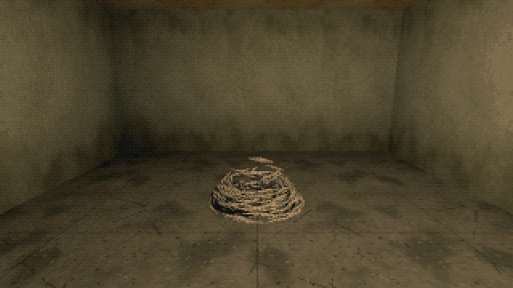

Tutorials › Make a Swarm Monster
How to Make a Swarm Monster in Godot 4
Hundreds of worms in one MultiMesh, one draw call: each crawls to its own place in the swarm's shape, a blow throws the nearest off, and they crawl back.

A swarm monster is hundreds of small creatures that move as one thing: a heap that rises, a column, a shape that breaks apart when you hit it and comes back together. This script is the heart of one: worms in one MultiMesh (one draw call, no bones), each with its own place in the swarm's shape, crawling there at a worm's pace, so a new shape reads as worms crawling, never as a shape morphing. A blow throws the worms nearest it off; they fall, writhe a moment and crawl back to their places. The wriggle is the shader's: a wave down each worm, its phase the worm's own.
Script: swarm_monster.gd (MIT) · Godot 4.3 or newer · its folder on GitHub
How to use it
- Add a
Node3Dand attachswarm_monster.gd. The worms live in the world (top_level): the node is only where the swarm's shape is, so move the node and the worms crawl after it. - Set
count,worm_lengthandcrawl_speed, andshapetoheap(a mound,radiusacross) orcolumn(a pillar about head height). Changeshapeat any time: the worms crawl to their new places. - Call
hit(amount, at)with a number of worms and a point in the world (a bullet's hit, a blow): that many of the worms nearest the point are thrown off it. - A shape of your own is a new branch in
_slot(i): it turns each worm's own numbers (an angle, a radius, a height) into a place in the node's space.
What it needs
- Godot 4.3 or newer (the Compatibility renderer is enough).
- Nothing else: the worm's mesh and its shader are made in the script.
Try it free
The Cordatix PSX Horror Free Sampler carries this script as cordatix/psx_horror_swarms/sampler/swarm_monster.gd. J in the sampler's demo room opens its Swarms taste: worms living in a torn mattress and a hole in the floor pour out as you come near, gather into a heap and rise into a column, and the demo's revolver throws them off. The pack's own monsters build on this: a man of worms that bursts and rises again, a great worm that stands up out of a mattress, worms on a ceiling that drop their strands on you; hits, nests, navigation and seven looks.
How it was tested
In Godot 4.3 and 4.7.2, in the free sampler's project: one MultiMesh of 160 worms (one draw call), every worm in its heap, the column rising in under a second as the worms crawl, a hit throwing the 30 worms nearest it off, all of them back in their places within seconds, the swarm moved 2 m and its worms crawling after it, and the worm's faces pointing out.
The code
extends Node3D
## How to Make a Swarm Monster in Godot 4
## Cordatix Godot 4 PSX tutorials, MIT licensed: https://github.com/GoldenSparrow-Dev/cordatix-godot-psx-tutorials
## The devlog: https://cordatix.itch.io/cordatix-psx-horror-swarms/devlog/1746555/how-to-make-a-swarm-monster-in-godot-4-cordatix-psx-horror-swarms
## Make a swarm monster in Godot 4.3+: hundreds of worms in one MultiMesh (one draw call). Every worm has a slot in
## the swarm's shape and crawls to it at a worm's pace, so a new shape reads as worms crawling, not as a shape
## morphing; hit() throws the worms nearest the blow off, they fall, lie writhing and crawl back. The wriggle is the
## shader's: a wave down each worm, its phase the worm's own.
@export var count := 160
@export var worm_length := 0.35
@export var crawl_speed := 0.9
## The shapes it takes: "heap" (a mound) or "column" (a pillar, about head height).
@export var shape := "heap"
@export var radius := 0.6
enum { IN_SLOT, FLYING, LYING, CRAWLING }
const SHADER := """
shader_type spatial;
uniform vec3 color : source_color = vec3(0.80, 0.77, 0.70);
void vertex() {
// a wave running from the head back, per worm: INSTANCE_CUSTOM.r is its phase, .b how hard it writhes
float w = TIME * 9.0 + INSTANCE_CUSTOM.r * 6.28 + UV.x * 8.5;
VERTEX.x += sin(w) * 0.09 * INSTANCE_CUSTOM.b * sin(3.1416 * UV.x);
}
void fragment() {
ALBEDO = color * mix(0.7, 1.0, step(0.3, fract(UV.x * 7.0)));
ROUGHNESS = 0.4;
}
"""
var _mm: MultiMesh
var _pos := PackedVector3Array()
var _vel := PackedVector3Array()
var _fwd := PackedVector3Array()
var _state := PackedInt32Array()
var _timer := PackedFloat32Array()
var _seed := PackedVector3Array() # each worm's own numbers: an angle, a radius, a height (0..1)
var _clock := 0.0
func _ready() -> void:
var rng := RandomNumberGenerator.new()
rng.seed = 7
_mm = MultiMesh.new()
_mm.transform_format = MultiMesh.TRANSFORM_3D
_mm.use_custom_data = true
_mm.mesh = _worm_mesh()
_mm.instance_count = count
var mmi := MultiMeshInstance3D.new()
mmi.multimesh = _mm
mmi.top_level = true # the worms live in the world; this node is only where its shape is
var mat := ShaderMaterial.new()
mat.shader = Shader.new()
mat.shader.code = SHADER
mmi.material_override = mat
add_child(mmi)
for i in count:
_seed.append(Vector3(rng.randf() * TAU, sqrt(rng.randf()), rng.randf()))
_pos.append(global_transform * _slot(i))
_vel.append(Vector3.ZERO)
_fwd.append((global_transform.basis * _lie(i)).normalized())
_state.append(IN_SLOT)
_timer.append(0.0)
_mm.set_instance_custom_data(i, Color(rng.randf(), 0.0, 0.5, 0.0))
## A worm: a four-sided tube along Z, thick in the middle, UV.x from tail (0) to head (1).
func _worm_mesh() -> ArrayMesh:
var st := SurfaceTool.new()
st.begin(Mesh.PRIMITIVE_TRIANGLES)
var rings := 7
for k in rings - 1:
for s in 4:
var quad := []
for c in [[k, s], [k + 1, s], [k + 1, s + 1], [k, s + 1]]:
var u := float(c[0]) / float(rings - 1)
var a := float(c[1] % 4) * TAU / 4.0
var r := 0.06 * sin(PI * clampf(u, 0.08, 0.92))
quad.append([Vector3(cos(a) * r, sin(a) * r, u - 0.5), Vector2(u, 0.0), Vector3(cos(a), sin(a), 0.0)])
for t in [[0, 1, 2], [0, 2, 3]]: # clockwise seen from outside: Godot's front face
for j in t:
st.set_normal(quad[j][2])
st.set_uv(quad[j][1])
st.add_vertex(quad[j][0])
return st.commit()
## Which way worm i lies in its slot: round the shape, as worms coil, not pointing the way it crawled in.
func _lie(i: int) -> Vector3:
var a := _seed[i].x + _clock * 0.3 * (_seed[i].z - 0.5)
var about := Vector3(-sin(a), 0.0, cos(a))
if shape == "column":
return (about + Vector3.UP * 0.35 * (_seed[i].z - 0.5)).normalized()
return about
## Worm i's slot in the current shape, in this node's space.
func _slot(i: int) -> Vector3:
var s := _seed[i]
var a := s.x + _clock * 0.3 * (s.z - 0.5) # the heap churns slowly
if shape == "column":
var h := float(i) / float(count) * 1.7
return Vector3(cos(a) * 0.25 * s.y, h, sin(a) * 0.25 * s.y)
var r := radius * s.y
return Vector3(cos(a) * r, (0.05 + 0.5 * s.z) * (1.0 - s.y * s.y), sin(a) * r)
## Damage at a point: the worms nearest it fly off.
func hit(amount: float, at: Vector3) -> void:
var order := range(count)
order.sort_custom(func(a: int, b: int) -> bool: return _pos[a].distance_to(at) < _pos[b].distance_to(at))
for k in mini(int(amount), count):
var i: int = order[k]
var away := (_pos[i] - at).normalized()
_vel[i] = away * randf_range(1.5, 3.0) + Vector3(0, randf_range(1.0, 2.5), 0)
_fwd[i] = Vector3.FORWARD.rotated(Vector3.UP, randf() * TAU) # it flies, and lands, any way round
_state[i] = FLYING
func _physics_process(dt: float) -> void:
_clock += dt
var gt := global_transform
for i in count:
match _state[i]:
IN_SLOT: # crawl to the slot; never jump there
var to := gt * _slot(i) - _pos[i]
var step := crawl_speed * 2.0 * dt
if to.length() > step:
_pos[i] += to.normalized() * step
_fwd[i] = _fwd[i].slerp(to.normalized(), minf(1.0, dt * 6.0)).normalized()
else:
_pos[i] += to
_fwd[i] = _fwd[i].slerp(gt.basis * _lie(i), minf(1.0, dt * 3.0)).normalized()
FLYING: # fall, bounce, lie
_vel[i].y -= 9.8 * dt
_pos[i] += _vel[i] * dt
if _pos[i].y <= gt.origin.y + 0.02:
_pos[i].y = gt.origin.y + 0.02
_state[i] = LYING
_timer[i] = randf_range(0.5, 1.5)
LYING: # writhe a moment
_timer[i] -= dt
if _timer[i] <= 0.0:
_state[i] = CRAWLING
CRAWLING: # back over the floor to the swarm
var home := Vector3(gt.origin.x - _pos[i].x, 0.0, gt.origin.z - _pos[i].z)
if home.length() < radius:
_state[i] = IN_SLOT
else:
_fwd[i] = home.normalized()
_pos[i] += _fwd[i] * crawl_speed * dt
var c := _mm.get_instance_custom_data(i)
c.b = 1.0 if _state[i] == LYING else 0.5 # a fallen worm writhes harder
_mm.set_instance_custom_data(i, c)
var z := _fwd[i]
var x := (Vector3.UP if absf(z.y) < 0.95 else Vector3.RIGHT).cross(z).normalized()
var b := Basis(x, z.cross(x), z) * worm_length
_mm.set_instance_transform(i, Transform3D(b, _pos[i]))
The devlog and the pack
The step-by-step walkthrough is the devlog How to Make a Swarm Monster in Godot 4 (Cordatix PSX Horror Swarms) on itch.io, written for Cordatix PSX Horror Swarms, a PS1-style asset pack by Cordatix for Godot 4, Unity, Unreal and Blender.